EVOS FILM: film production in Kyiv and Ukrainian film distribution in Germany
Production
Films and projects
EVOS FILM is a Kyiv-based production company founded by two partners, each with nearly twenty years in film, television and advertising. We make quality genre films for local audiences and work with the most ambitious directors of the new generation of Ukrainian auteur cinema.
Films
-
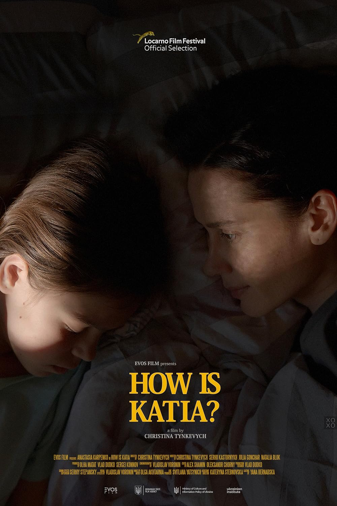
How Is Katia?
Як там Катя?
- Director
- Christina Tynkevych
- Format
- Feature
- Year
- 2022 · 101 min
- Status
- Premiered at Locarno Film Festival, Concorso Cineasti del presente
Anna has just taken on a mortgage in dreams of a better life with her daughter Katia. Instead, a turn of events makes Anna face a dilemma that will change her personal moral borders in a society that hasn’t got any.
Supported by the Ukrainian State Film Agency and the Ukrainian Institute. International sales: Coccinelle Film Sales. Selected for more than 30 festivals.
9 wins & 14 nominations
Locarno Film Festival - 2022
- WinBest Actress - Filmmakers of the PresentAnastasiya Karpenko
- WinSpecial Jury Prize - Filmmakers of the PresentChristina Tynkevych
- NominationGolden Leopard - Filmmakers of the PresentChristina Tynkevych
Ukrainian Film Academy Awards - 2024
- WinGolden Dzyga, Best ActressAnastasiya Karpenko
- NominationGolden Dzyga, Best FilmChristina Tynkevych (director), Olha Matat, Vlad Dudko, Sergei Konnov (producers)
- NominationGolden Dzyga, Best Actress in a Supporting RoleTatyana Krulikovskaya
- NominationGolden Dzyga, Best SoundSerhiy Stepansky
CinEast - 2022
- WinCritics’ Prize - Best Feature FilmChristina Tynkevych
- NominationGrand Prix - Best Feature FilmChristina Tynkevych
Ukrainian Film Critics Awards “Kinokolo” - 2022
- NominationDiscovery of the YearChristina Tynkevych
- NominationBest ActressAnastasiya Karpenko
Come and Review - 2023
- WinGolden Palacinka, Best Supporting PerformanceTatyana Krulikovskaya
- NominationGolden Palacinka, Best Lead ActressAnastasiya Karpenko
Cork International Film Festival - 2022
- WinYouth Jury Award - Feature FilmChristina Tynkevych
Molodist Kyiv International Film Festival - 2023
- WinScythian Deer - National Competition: Full-Length FilmsChristina Tynkevych, director
Festival del Cinema Europeo - 2022
- WinSpecial Jury Award - Golden Olive Tree CompetitionChristina Tynkevych, director
Dream City - Rivne International Film Festival - 2024
- WinGrand PrixChristina Tynkevych, director
São Paulo International Film Festival - 2022
- NominationNew Directors CompetitionChristina Tynkevych
Thessaloniki Film Festival - 2022
- NominationGolden Alexander - Meet the Neighbors CompetitionChristina Tynkevych
Bangkok World Film Festival - 2022
- NominationBest Film - Lotus Award CompetitionChristina Tynkevych
Odesa International Film Festival - 2022
- NominationGolden Duke - National Competition ProgramChristina Tynkevych
Seville European Film Festival - 2022
- NominationBest Film - Extraordinary StoriesChristina Tynkevych
Mykolaichuk OPEN Audience Film Festival - 2023
- NominationFestival Audience Prize - International Feature CompetitionChristina Tynkevych, director
-
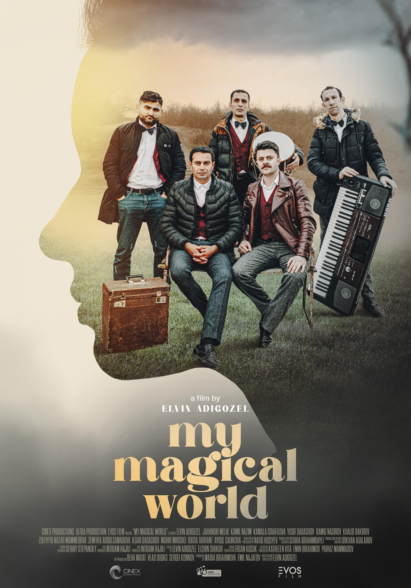
My Magical World
- Director
- Elvin Adigozel
- Format
- Feature, drama
- Year
- 2025 · 109 min
- Status
- World premiere at the 25th goEast Festival of Central and Eastern European Film; Ukrainian premiere at Odesa International Film Festival 2025
Co-production: Azerbaijan, Ukraine, Cyprus. EVOS FILM is the Ukrainian co-producer.
Two lifelong friends and bandmates face a tough choice between fame, happiness and loyalty to their childhood dreams. As ambition drives them apart, they discover the true cost of success may be more than they’re willing to pay.
In development
-
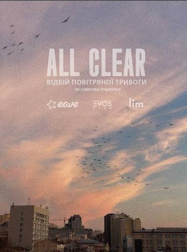
All Clear
Відбій повітряної тривоги
- Director
- Christina Tynkevych
- Genre
- Drama, romance · 100 min
- Status
- Financing · expected 2027
- Co-producers
- Fiction Park (Germany, NRW), SAMSA (Luxembourg)
- Supported by
- Less is More, EAVE Producers Workshop, Netflix grant, Oxbelly
Kyiv, 2022, the first three months of Russia’s full-scale invasion. Tina and Yuri, a young couple, struggle with the new reality around them and the choice it forces on them: flee to safety, or stay and help.
-
It’s All Soderbergh’s Fault
В усьому винен Содерберг
- Director
- Alina Hyseva
- Format
- Short fiction, dark comedy
- Status
- In development · shooting June 2027
Solia, nineteen, wakes up in a Kyiv police station with no memory of the day before.
-
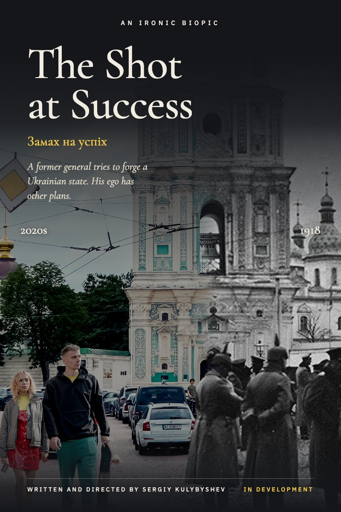
The Shot at Success
Замах на успіх
- Writer, director
- Sergiy Kulybyshev
- Genre
- Ironic biopic, dramedy · 100 min
- Status
- Script development · expected 2028
- Supported by
- MIDPOINT Intensive Ukraine
In a modern-day reimagining of the chaos of 1918, an approval-addicted former Russian general, Skoropadskyi, tries to forge a Ukrainian state, only to discover that true leadership demands the ultimate sacrifice: his ego.
-
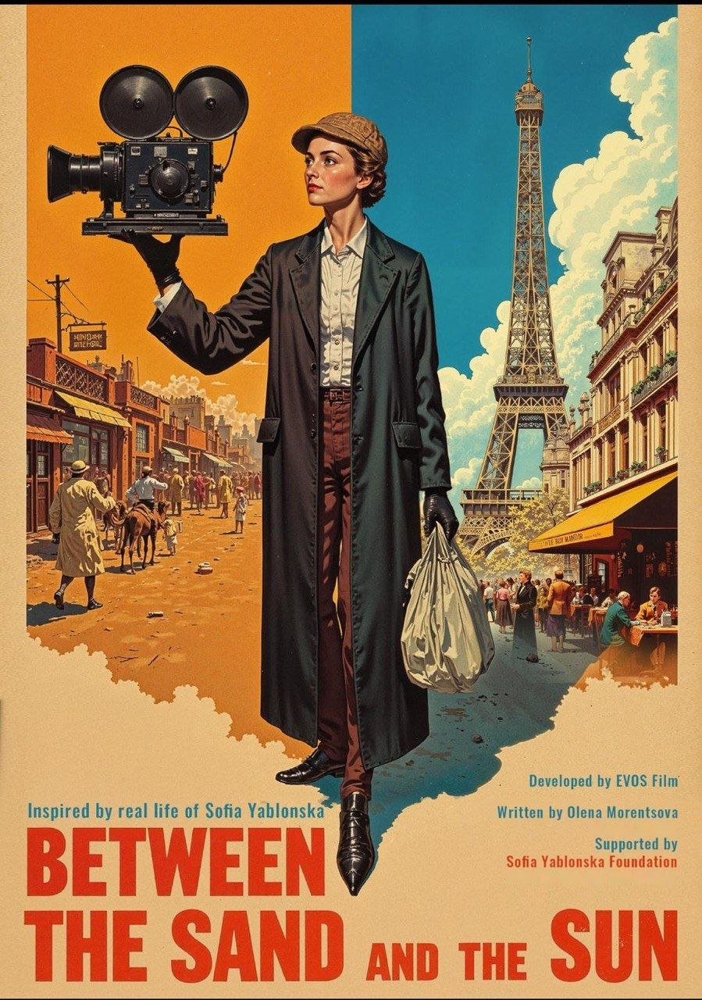
Teura. Between the Sun and the Sand
Теура. Між сонцем і піском
- Writer
- Olena Morentsova
- Genre
- Romantic historical drama · 100 min
- Status
- Script development · expected 2029
- Countries
- Ukraine, France
- Supported by
- TFL Extended
A young Ukrainian woman, Sofia Yablonska, sets off for Morocco determined to prove she can become an international journalist in a world that keeps such work for men. A perilous journey deep into the desert reveals another culture, and her true calling.
Distribution
Ukrajina Cinema is a Ukrainian film distribution initiative in Germany, run by EVOS FILM. We bring contemporary Ukrainian films to cinemas across Germany, working directly with cinemas, cultural institutions, festivals and Ukrainian communities.
- 400+commercial screenings in the past year
- 100+German cities
In German cinemas
-
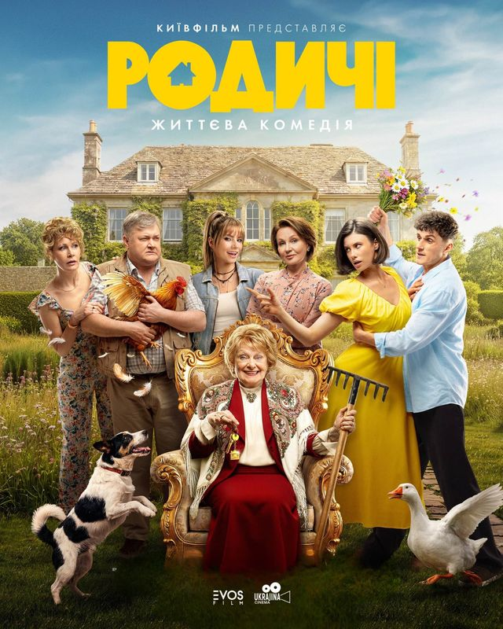
The Relatives
Родичі
Baba Nadia turns eighty, and her family is already dividing up the inheritance: her house in a village outside Kyiv. Her granddaughter brings a new sofa, her son a headstone, and the whole village watches to see who outwits whom.
-
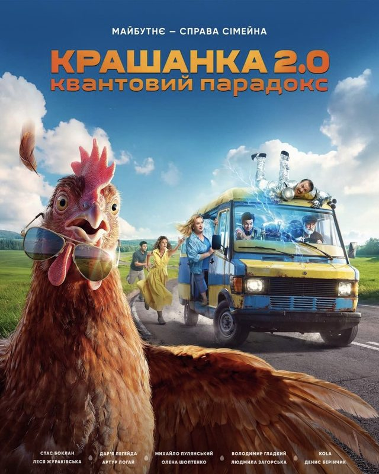
Krashanka 2.0. The Quantum Paradox
Крашанка 2.0. Квантовий парадокс
When Ivan Zabiiaka learns that his son is not at the front but in a military hospital, he sets off across the country in an old van with his home-built Quantum Paradox Machine, hoping to change the past and stop the war.
-
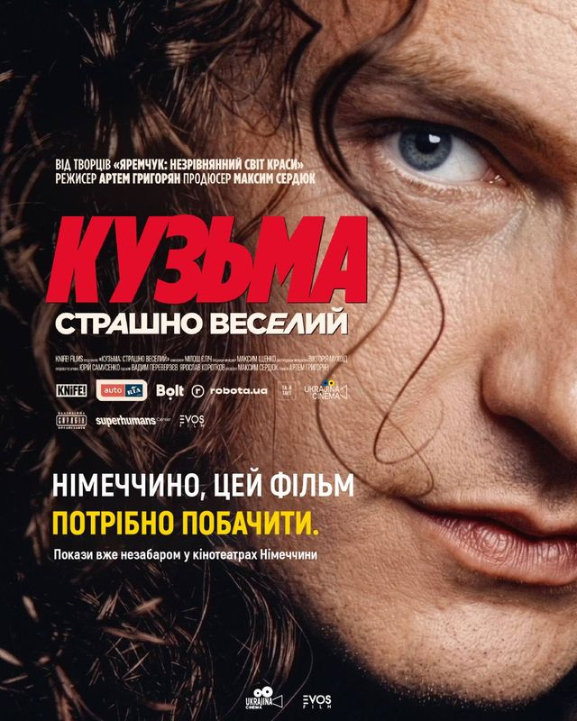
Kuzma: Terribly Funny
Кузьма: Страшно веселий
The life of Andrii Kuzmenko, frontman of Skryabin, loved by millions and truly known by few, told through archives that have never been seen before.
-
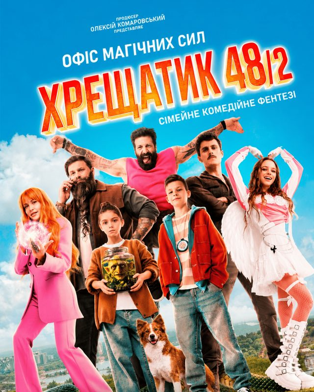
Office of Magical Forces
Хрещатик 48/2
Eleven-year-olds Yurko and Mia stumble on a secret way into Otherworld Kyiv, a hidden realm that has existed since the year 482, right in the middle of the modern city.
-
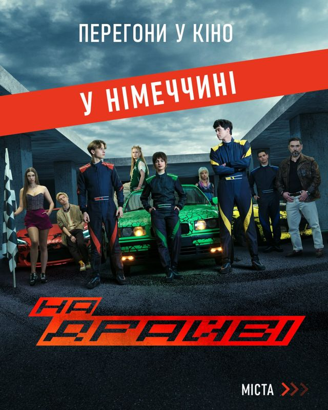
On Drive
На драйві
In frontline Kharkiv, a group of friends find expensive cars abandoned in a shopping centre closed by the war, and start racing. Every run is faster, riskier, and could be their last.
-
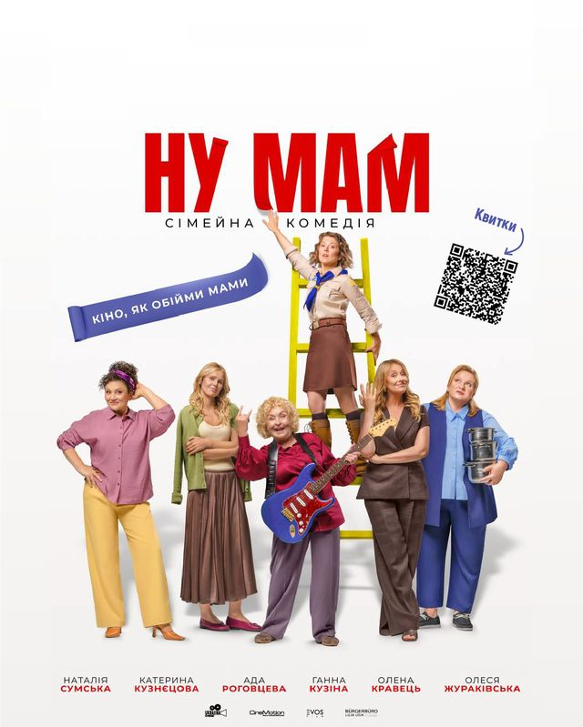
Nu Mam
Ну мам
Interwoven stories of mothers and their children, from childhood to adult life: a warm comedy about love, independence and acceptance.
-
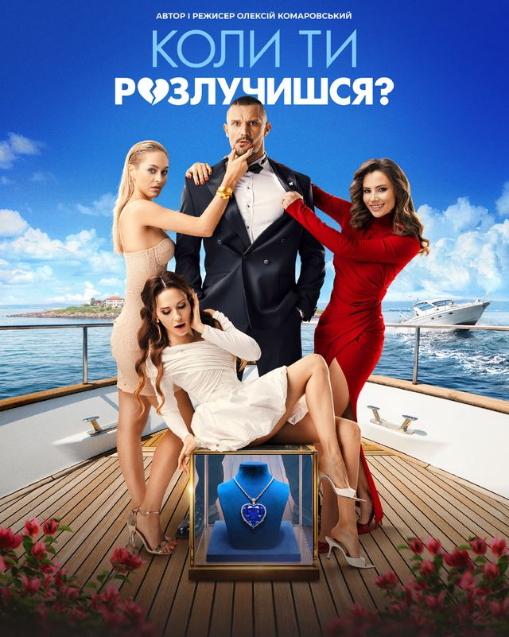
When Will You Get Divorced?
Коли ти розлучишся?
At her dream wedding, former con artist Lora’s groom vanishes mid-ceremony, just as a legendary diamond goes missing. She and her friend Ksenia set out to find him.
-
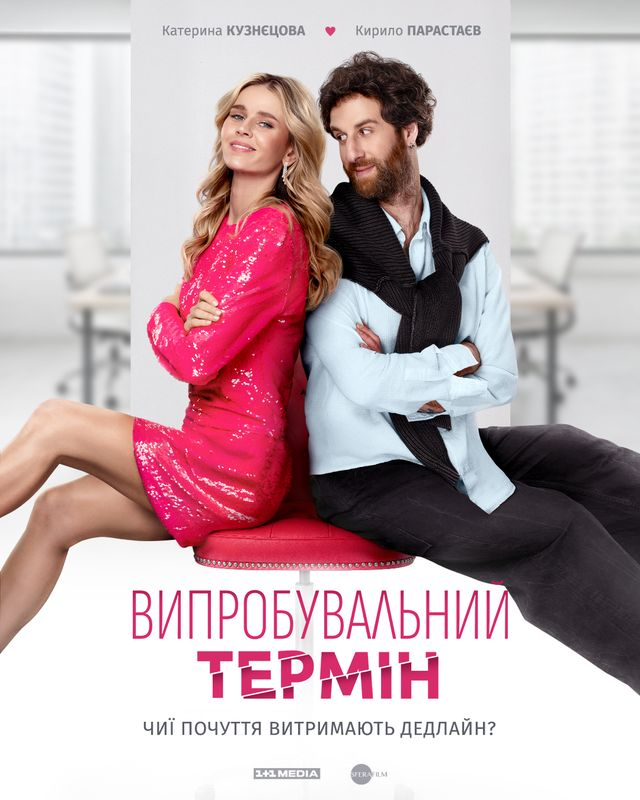
Trial Period
Випробувальний термін
Polina, a businessman’s glamorous daughter, lands a one-month trial at an advertising agency, competing for a single job with Roman, who sees the world very differently.